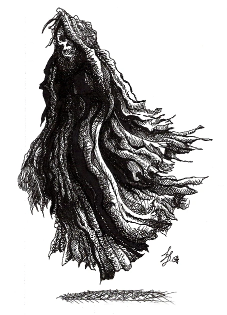
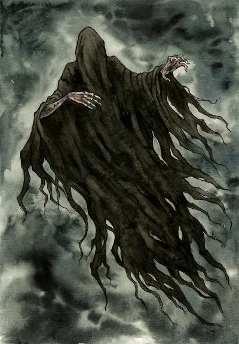

A wraith is an undead creature whose name originated in Scottish folklore. A type of ghost or spirit, wraiths were traditionally said to be the embodiment of souls who are either on the verge of death, or who have recently passed on. In modern times, the concept of a wraith is more likely to refer to an evil spirit, particularly one which has unfinished business in the mortal realm. They are typically depicted as skeletal figures draped in tattered rags, and are most commonly associated with graveyards or other haunted locales. The modern perception of a wraith is that of an entity which actively seeks harm to those that it encounters, no matter their motivation.

A wraith is a kind of undead creature, the origin of the word “wraith” comes from Scottish folklore, where it refers to a ghost that is always seen near death, and can recognize the spirits of those who are about to die and seize the soul. Ghosts or soul-like entities often take on the appearance of what their owners looked like when they were alive.
